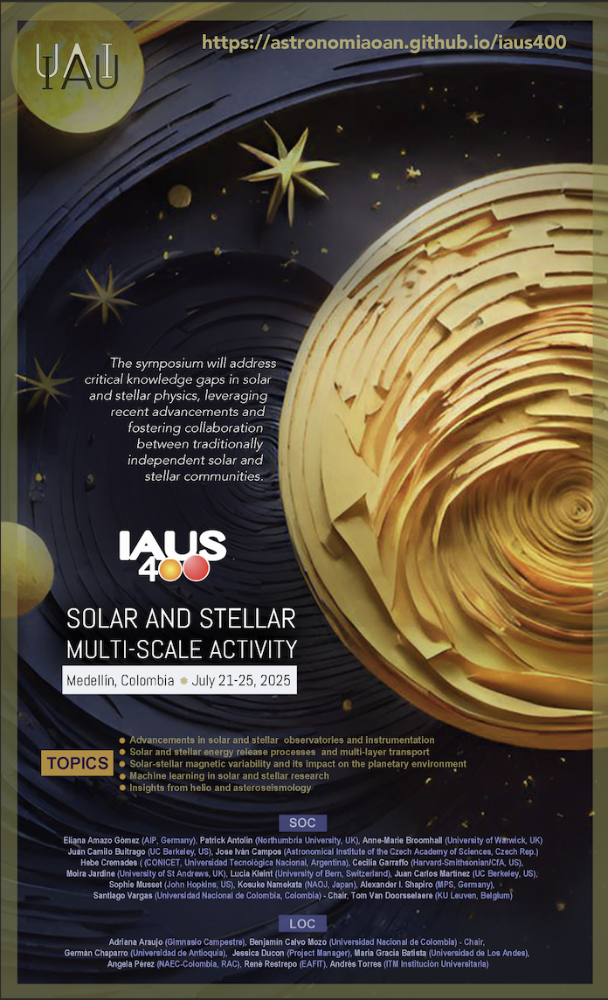

4WAI
4th Workshop for Astronomy Beyond the Common Senses
for Accessibility and Inclusion
2026
for Accessibility and Inclusion
2026
Cancún
30-31 November
30-31 November


Be part of
The IV Workshop for Astronomy Beyond the Common Senses for Accessibility and Inclusion (4WAI) continues a growing international effort to promote equity, accessibility, and inclusion in astronomy. Building on previous editions held in Colombia, online, and Uruguay, the workshop brings together astronomers, educators, disability specialists, students, and science communicators to share experiences and innovative practices.
The 4WAI provides a collaborative space to discuss inclusive methodologies, assistive technologies, and strategies that broaden participation in astronomy education, research, and outreach. Aligned with the values of the International Astronomical Union, the workshop highlights astronomy as a powerful tool for social inclusion and scientific enrichment.
Scientific Organising Committee
Beatriz García (AIP, Argentinay)
Santiago Vargas (Universidad Nacional de Colombia, Colombia)
Santiago Vargas (Universidad Nacional de Colombia, Colombia)
Local
Organising
Committee
Vladimir Avila (México)
TOPICS
Advancements in Solar and Stellar Observatories and Instrumentation
Explore the latest technological breakthroughs in solar and stellar observatories, including missions like Solar Dynamics Observatory (SDO), Interface Region Imaging Spectrograph (IRIS), HINODE, Parker Solar Probe, Solar Orbiter, DKIST, GREGOR, Solar Swedish Tower (SST), New Solar Telescope (NST), and NVST. Discuss how these advancements contribute to a deeper understanding of solar and stellar atmospheres and internal structures.
On the stellar side, observations are reaching the point of solar comparison, in some cases with higher temporal and in particular spectral resolution. The future is promising for stellar observations, the upcoming of high resolution instruments such as the ANDES spectrograph at the The Extremely Large Telescope (39 m, E-ELT), or the G-CLEF instrument at the Giant Magellan Telescope (25.4 m, GMT).

Solar and Stellar Energy Release Processes and Multi-Layer Transport
Investigate the intricate processes driving energy production and transport in the solar and stellar atmospheres. Explore multi-layer transport phenomena, including the small- to large-scale conversion of magnetic field energy leading to coronal and flare heating, waves and flows from the photosphere to the inner and extended corona. Discuss how these processes impact the overall energy balance of stars and their environments.

Solar-Stellar Magnetic Variability
and its Impact on the Planetary Environment
and its Impact on the Planetary Environment
The analysis of solar and stellar magnetic variability is a prerequisite to properly understanding the behavior and evolution of stellar systems as a whole. The interplay of small scale phenomena and its effects on the large scale magnetic behaviour is not yet well understood. Solar-stellar energetic transient events, the associated particle bombardment, magnetized outflows and winds must be accounted for a consistent characterization of habitability conditions. State-of-the-art findings in these leading topics will nurture a comprehensive exploration of the Sun-Earth system, as well as the Stellar-Exoplanetary interactions.

Machine Learning and Novel Methods
in Solar and Stellar Research
in Solar and Stellar Research
Explore the application of machine learning, and other methods and techniques, in solar and stellar research. Discuss how automatic feature detection, data analysis, and the development of physically-meaningful algorithmsarerevolutionizingtheunderstandingofcomplexsolar and stellar physics problems. Highlight the role of machine learning in handling vast datasets generated by advanced instruments.

Insights from
Helio and Asteroseismology
Helio and Asteroseismology
Gain insights from helioseismology and asteroseismology techniques, which provide information about the interiors of stars. Discuss the widespread use of helioseismology in the solar community and its relevance in understanding large and small-scale phenomena. Explore how asteroseismology contributes to a closer connection between solar and stellar fields, aiding in comprehending the generation of various phenomena from the stellar interior. Examine recent developments in understanding the dynamic processes that govern magnetic field generation on both global and local scales.

Important Dates
1 February 2026: First announcement
1 March 2026: Second announcement
1 March 2026: Abstract submission opens
1 August 2026: Abstract submission deadline
15 August 2026: Communication of selected oral/poster contributions and grants awarded
30-31 November 2026: 4WAI in Cancún
15 January 2027: Proceeding submission deadline
1 March 2026: Second announcement
1 March 2026: Abstract submission opens
1 August 2026: Abstract submission deadline
15 August 2026: Communication of selected oral/poster contributions and grants awarded
30-31 November 2026: 4WAI in Cancún
15 January 2027: Proceeding submission deadline
Event
Venue
The event will be held at the Fundadores Auditorium, one of the premier event spaces on the EAFIT University campus, located in the heart of Medellín, Colombia. This modern auditorium is equipped with state-of-the-art audio and visual systems, comfortable seating for a large audience, and an elegant design that creates a welcoming atmosphere for conferences, presentations, and cultural event
Full
Agenda
and Speakers
The full program for the symposium is now available. This release ensures that attendees have access to the most current and comprehensive information about the sessions, speakers, and planned activities. You can now explore our list of invited speakers and get a look at the exciting topics they will cover. Stay tuned for updates and check back regularly to discover the latest additions to our dynamic lineup.
Conference
Proceedings
Submit your contribution. Don’t miss the opportunity to be part of the IAUS400 Proceedings
.
.
Register
to
3WAI
We invite you to register for the IV Workshop for Astronomy Beyond the Common Senses for Accessibility and Inclusion (4WAI) and join an international, interdisciplinary community committed to advancing equity and accessibility in astronomy. By registering, you will take part in discussions and exchanges focused on inclusive practices in education, research, outreach, and science communication, contributing to a collective effort to expand participation and reimagine how astronomy can be experienced beyond the common senses.
Publication
of
Proceedings
The proceedings of the IAUS400 symposium will be published in the IAU Proceedings Series by Cambridge University Press (CUP) in February 2026.
To ensure your contributions are included, all papers must be submitted by August 15, 2025. This deadline is crucial for the review, revision, editing, and typesetting processes. Unfortunately, any submissions received after this date will not be accepted for publication.
The submission window will be open until August 20, 2025.
We look forward to your valuable contributions!
We look forward to your valuable contributions!
Sponsors
Observatorio Astronómico Nacional de Colombia
Academia Colombiana de Ciencias Exactas, Físicas y Naturales
Universidad Nacional de Colombia
Red de Astronomía de Colombia
International Astronomical Union
Academia Colombiana de Ciencias Exactas, Físicas y Naturales
Universidad Nacional de Colombia
Red de Astronomía de Colombia
International Astronomical Union
#4WAI